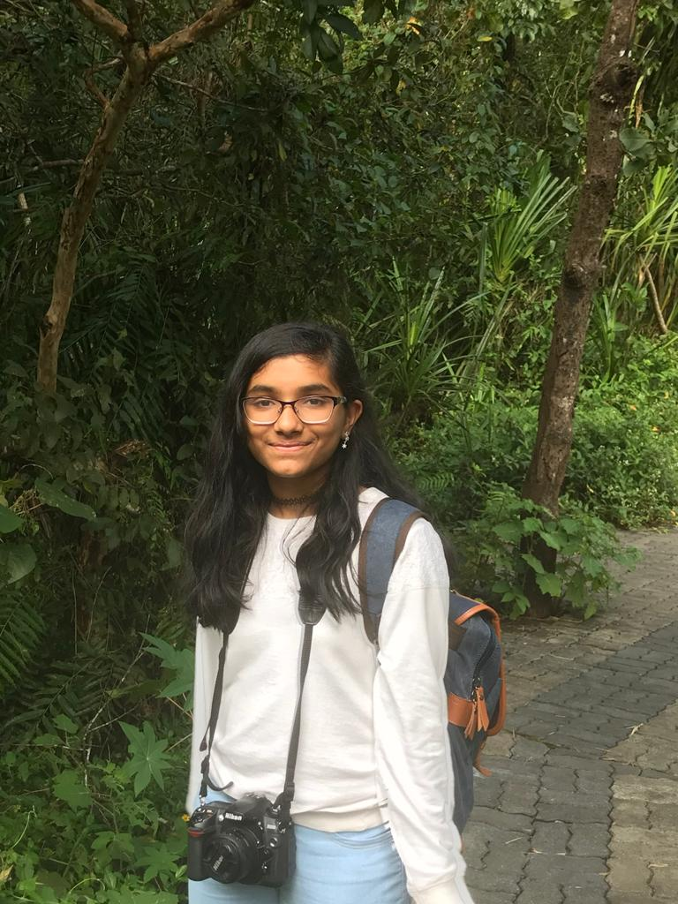

About Me.


Hello! I'm a computer science student passionate about coding in Python, C, HTML, CSS, and JavaScript. I specialize in web development, love solving problems, and have a keen interest in photography and writing. Explore my work on GitHub and Portfolio. Let's connect and explore the intersection of technology, creativity, and expression!
- Skills: HTML, CSS, JavaScript, Python, C